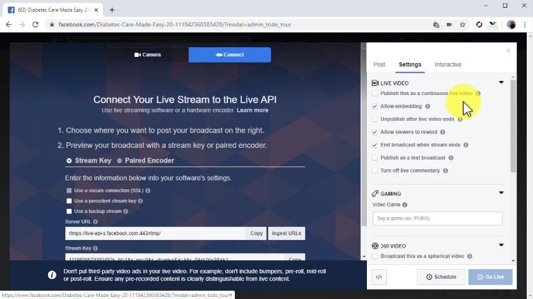

Chapter 7:
Using Facebook Live To Boost Engagement And Product Awareness

You might already be aware that live streaming is all the rage these days, and with reason. Live streamers can interact with their followers and showcase products in real time, which increases engagement, product awareness, brand recall, and loyalty. Facebook offers one of the most sophisticated and simple to use live streaming platforms you can use, with the added benefit of Facebook discoverability. In this lesson, we are going to teach you the easy method to go live on Facebook so you can grow the relationship you have with your audience faster and showcase your offers in a more dynamic way. Going Live On Facebook To go live on Facebook, sign into your account, go to your Facebook page, and click on the “live” button inside the “create” section. This will open the live broadcast window, where you have to select “camera” to use a webcam to broadcast, or “connect” to broadcast using live streaming software. In this case, we are going to select “connect” so we can configure the live stream with external software, using the information provided in this window. Now it is time to add your information to the broadcast. First, you are going to select where you are going to share your live broadcast. For this, click on the “share” menu button. You can share on your timeline, on a group, on an event, or on a page. For this example, we are going to select to share on a page, and then we are going to select the page we created a few lessons ago. Next, enter the description of your live broadcast into the field below. Here it is recommended that you compose a description that includes keywords, search terms, and in case you are promoting a product, the sales page URL. In this case, we are going to discuss a product that we are promoting, so we are going to add the name of the product, niche keywords related to the product, and the sales URL with a call-to-action at the end. Now add the title of your live broadcast into the “title” field. Then, add your niche keywords into the “tags” field. This will make your broadcast more easily discoverable in the results page. Now click on the “settings” tab. Here you are going to configure your live broadcast settings. The default settings are adequate for marketing purposes, so you can scroll past to the “cross-posting” section. If you have other pages that are related to your business page, here you can select them to share your live broadcast inside them too. Lastly, you can click on the “interactive” tab to select to create polls or triv ia questions that your audience can respond while you are live! You simply have to click on “add question” to create your poll. Because we are creating a product promotion in this example, we are going to ask viewers what other products in the niche they use, and we are going to add the options as answers below. You can click on “save” after you add your question and answers. And now that you have fully configured your live broadcast, all you have to do is to click on the “go live” button! No other social media makes it this easy to engage with your would-be customers in real time!
<< CHAPTER = 6 CHAPTER = 8 >>